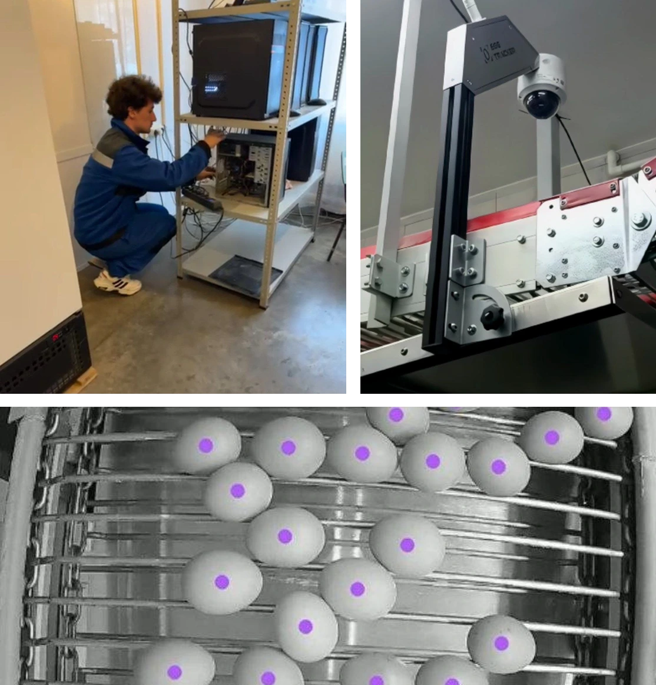
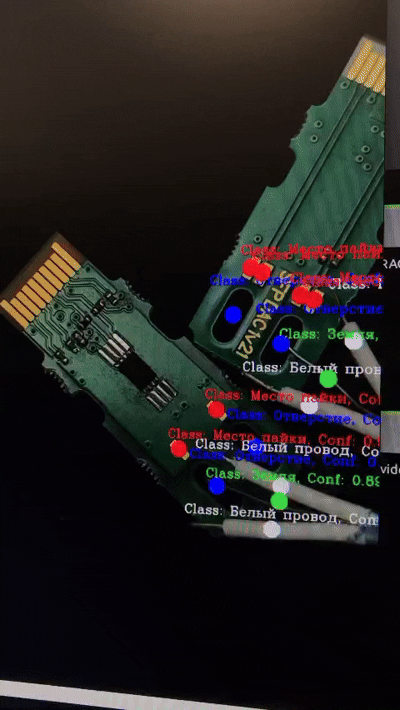

Hi! I'm a software developer.
I've been working with code for several years, mostly around Python, web development and computer vision. I've built web applications and APIs, worked with databases and Linux servers, deployed systems in real-world environments, and even helped develop the vision system for a robot designed to solder microcomponents.
One of the projects I'm most proud of started as a completely new direction within my company. I helped build a computer vision system for automated quality control at poultry farms - from preparing datasets and developing image-processing software to setting up cameras, servers and databases on-site.
The system eventually grew into a production solution used by 12 poultry farms across Russia.


I also enjoy building small tools that make everyday work easier. Sometimes it's a full application, sometimes it's a simple script that saves someone an hour of repetitive work.
Right now, I'm looking forward to new challenges, interesting projects and opportunities!
Peace! ☮︎